Ukoliko imate instaliran F-Droid, onda preporučujemo da APG preuzmete i instalirate sa F-Droida.
Figure 1: Instaliranje APG-a sa Gugl pleja (eng. Google Play).
Figure 2: Kada se instalacija završi pokrenite APG.
3. Podešavanje APG-a
Kada se instalacija završi pokrenite APG kako bi ste generisali vaš novi GPG ključ za postojeći imejl.
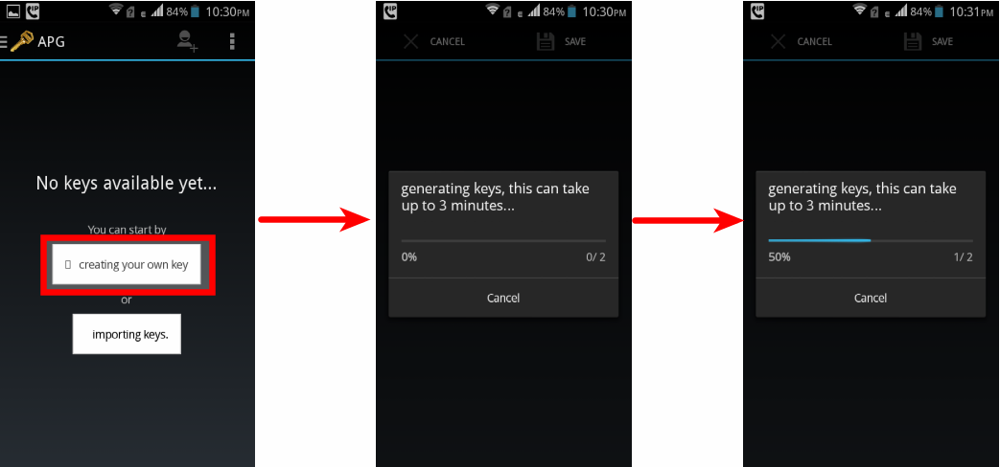
Figure 3: Odaberite opciju "Create your own key" da bi ste kreirali novi ključ. Ukoliko već imate željeni GPG ključ za mejl adresu koju koristite i na Android telefonu odaberite opciju "import keys" i unesite javni i tajni ključ sa drugog računara koristeći USB kabl.
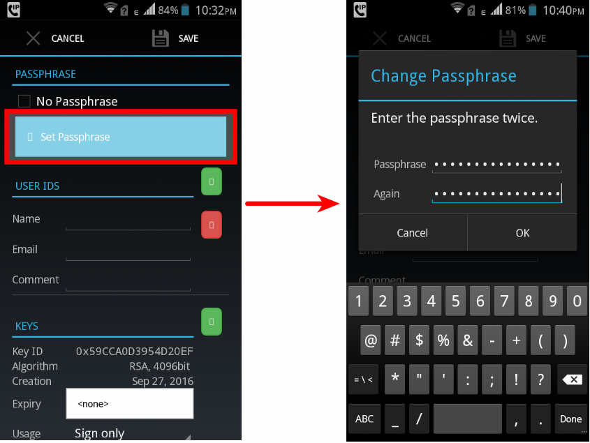
Figure 4: Kada se ključ generiše, pitaće vas da podesite GPG šifru za taj ključ. Ovde obratite pažnju jer šifra mora da bude jaka kako bi vas zaštitila i u slučaju gubitka ključeva.Šifra za pristup vašem mejlu ne bi trebalo da bude ista niti da liči na šifru koju ste podesili za vaš GPG ključ. Savetujemo upotrebu malih i velikih slova, brojeva kao i specijalnih kakraktera za šifru, kao i da dužina šifre bude preko 12 karaktera.
Takođe je moguće umesto jedne duge šifre koristiti frazu od nekoliko nepovezanih slučajnih reči (kao na primer: "Correct Horse Battery staple").
Nakon postavljanja šifre za novi GPG ključ, dodajte imejl adresu za koju ste generisali ključ, ime, kao i opcioni komentar ako želite.
Posle ovog koraka smo završili sa podešavanjima za APG, i prelazimo na instaliranje i podešavanje imajl klijenta koji će se oslanjati na APG za operacije šifrovanja, dešifrovanja, digitalnog potpisivanja i provere digitalnih potpisa.
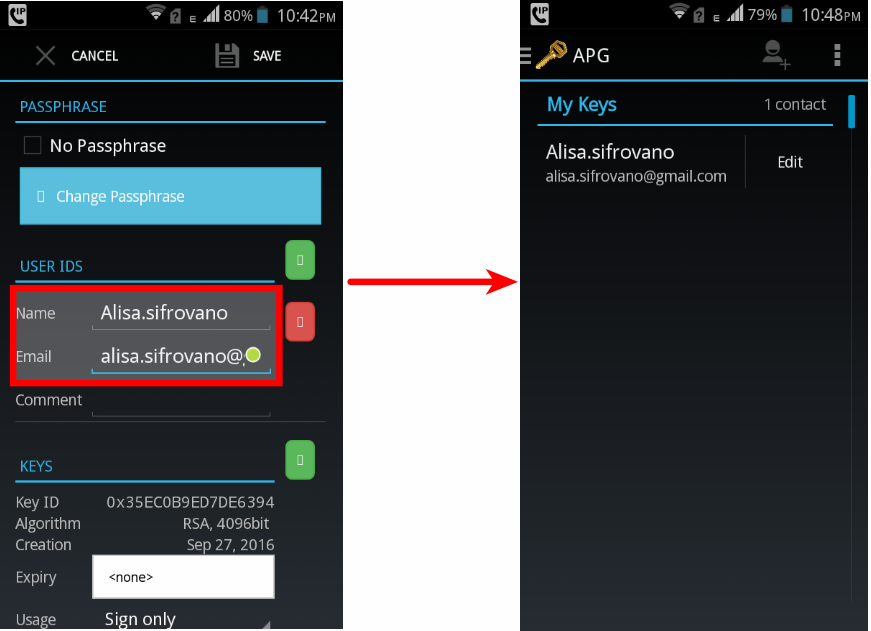
Figure 5: Dodajte imejl adresu za koju ste generisali ključ i ime.
3.1. Objavljivanje vašeg javnog kluča
Kada kreirate GPG ključ želite da objavite vaš javni ključ kako bi svako ko želi da vam pošalje šifrovanu poruku mogao lako da sazna i nabavi vaš javni ključ i njime vam šifruje poruku.
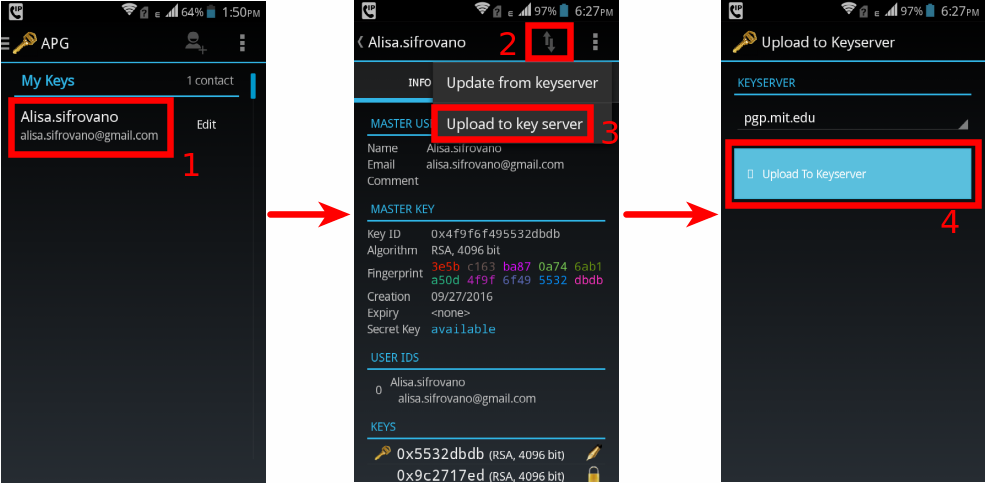
Figure 6: Pošaljite vaš javni ključ iz APG-a na server javnih ključeva (eng key server) (u našem slučaju server je pgp.mit.edu).
4. Instaliranje K-9 Mejl-a
Kako bi lakše dešifrovali primaljene šifrovane mejlove i slali šifrovane mejlove drugima potreban vam je imejl klijent koji prepoznaje da se radi o šifrovanim porukama i u tom slučaju se obraća programu (APG-u) za podršku.
Postoje i drugi klijenti pored K-9 mejla koji podržavaju šeifrovanu elektronsku poštu oslanjajući se na APG ili Openkičejn (eng. OpenKeyChain), ali nisu otvorenog koda (eng. OpenSource) kao APG.
Da bi instalirali K-9 mejl, idite na Gugle Plej stor (eng. Google Play Store), ili na F-Droid.
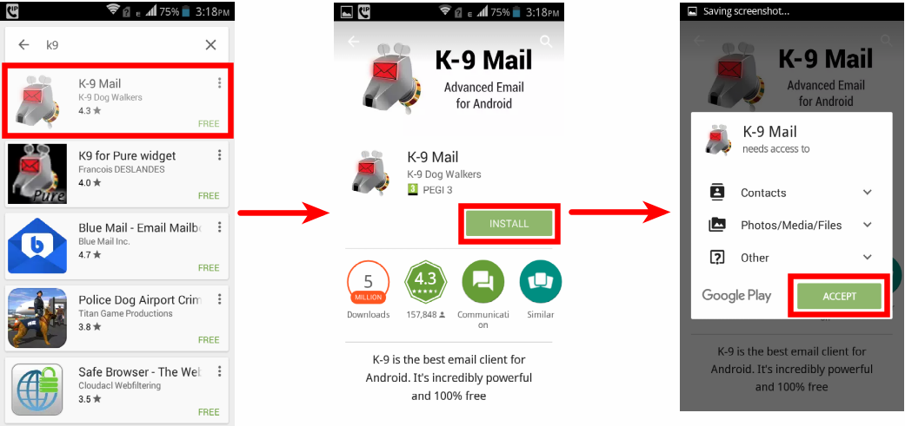
Figure 7: Instalirajte K-9 mejl sa Gugle Plej-a ili F-droid-a.
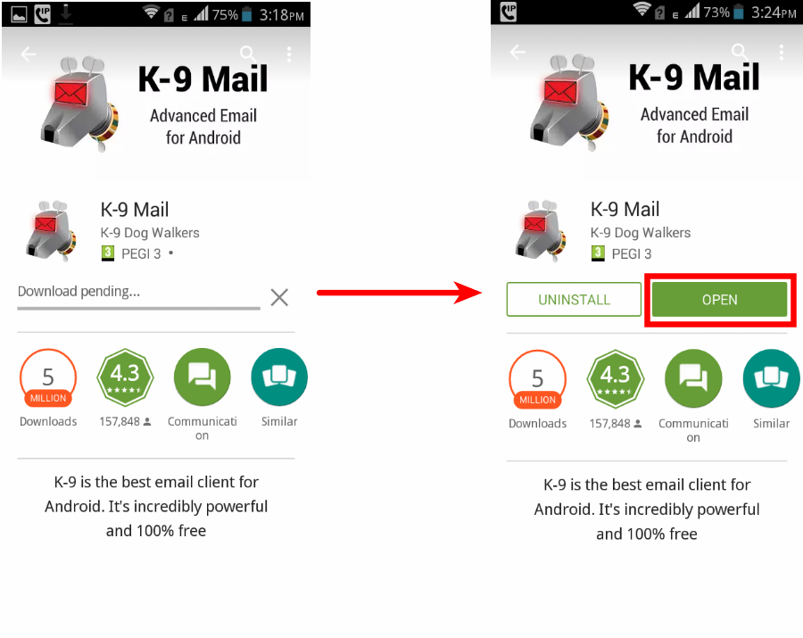
Figure 8: Kada se instalacija završi pokrenite K-9 mejl.
5. Pedešavanje K-9 mejl-a
Kada posle instalacije pokrenete K-9 mejl, potrebno je da podesite vaš imejl nelog unošenjem vaše mejl adrese (imejl adresa je ona ista za koju ste kreirali i GPG ključ, u našem slučaju alisa.sifrovano@gmail.com) i šifre za pristup toj mejl adresi.
Važno je razumeti da postoje dve šifre: jedna za pristup vašem mejlu u obliku korisničkog imena mejl adrese i šifre za to korisničko ime, a druga šifra je za pristup vašem tajnom GPG ključu koga ste malopre kreirali pomoću APG programa.
Šifra za GPG nema nikakve veze sa šifrom za pristup vašem mejl nalogu, i ukoliko izgubite GPG šifru i dalje ćete moći pristupiti mejl nalogu čitati/pisati nevšifrovane mejlove.
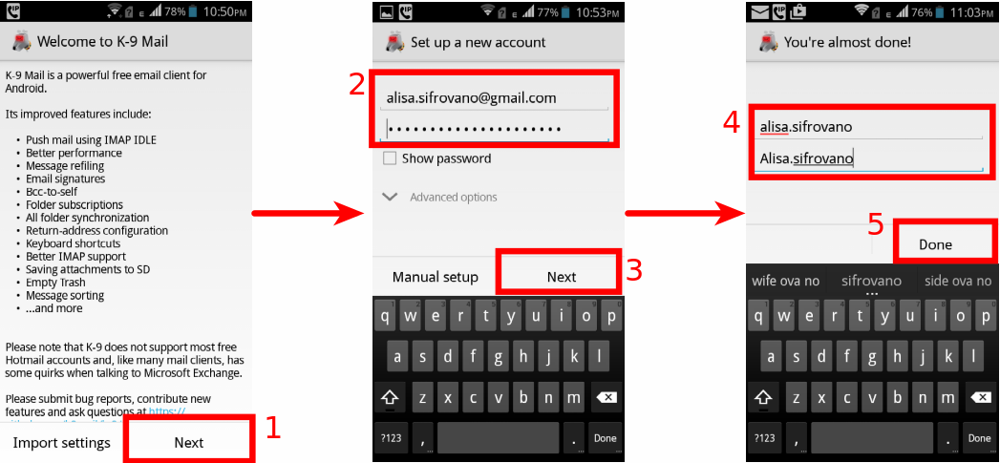
Figure 9: U K-9 mejlu unesite mejl adresu za koju ste pravili GPG ključ i šiftu za pristup tom mejlu.
6. Razmena šifrovanih poruka
6.1. Nabavljanje javnog ključa kontakta
Da bi ste poslali šifrovanu poruku potreban vam je javni ključ kontakta kome istu želite poslati,isti javni ključ vam je takođe potreban da bi ste proverili digitalni potpis primljene poruke istog kontakta.
Pa hajde da preuzmemo javni ključ nekog našeg kontakta.
Podrazumeva se da je i naš kontakt takođe kreirao svoj par GPG ključeva, kao i da je poslao javnikluč na neki server javnih ključeva.
Napomenimo da nije bitno na koji server javnih ključeva ste vi poslali vaš javni ključ ili vaš kontakt svoj, jer se svi serveri javnih ključeva međusobno sinhronizuju.
Pa tako, svaki ključ koji se pošalje na neki server javnih ključeva naćiće se na svim ostalima posle otprilike desetak minuta.
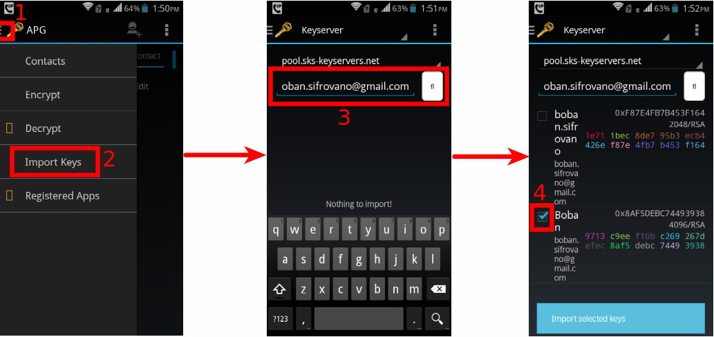
Figure 10: Da bi ste nabavli javni ključ kontakta izaberite gornji levi meni unutar AGP-a i opciju uvoza ključeva (eng. Import Keys), odaberite server javnih ključeva i unesite imejl adresu čiji javni ključ želite nabaviti. Ukoliko adresa ima više ključeva, obratite se kontaktu za izbor trenutnog važećeg.
6.2. Slanje šifrovanih mejlova
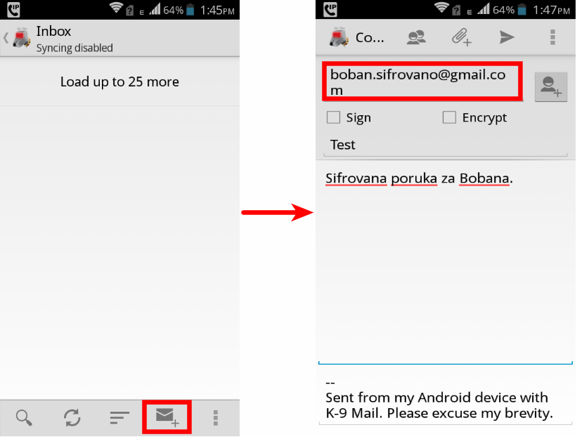
Figure 11: Da bi ste poslali šifrovanu poruku, prvo sastavite istu i unesite imejl adresu primaoca čiji ste javni ključ predhodno preuzeli.
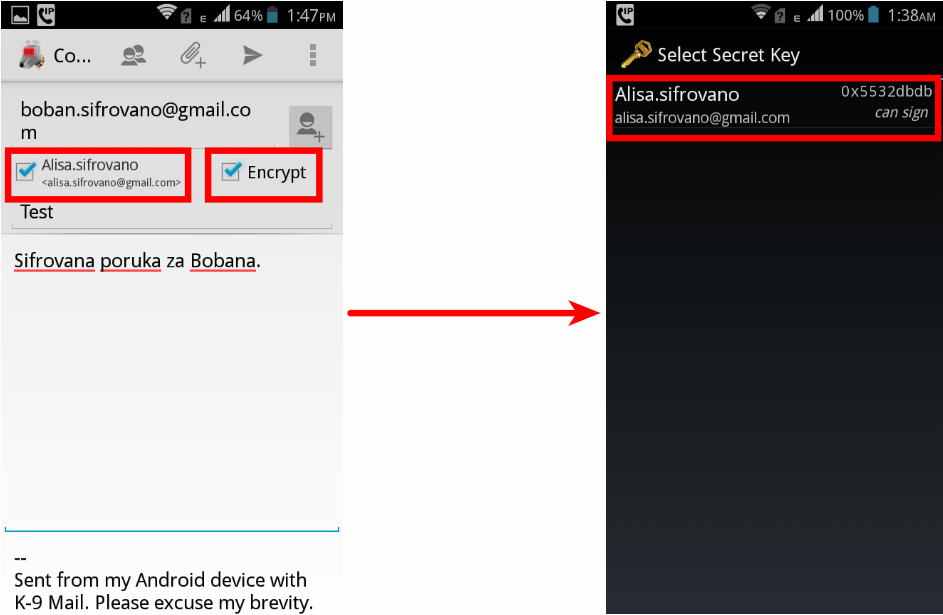
Figure 12: Kada sastavite poruku odaberite opcije za digitalno potpisivanje (eng Sign) i šifrovanje (eng. Encrypt), i selektujete za potpisivanje vaš ključ.
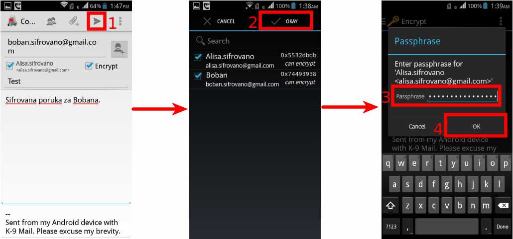
Figure 13: I najzad kliknite na ikonicu za slanje poruke (papitni aviončić) i unesite vašu šifru za pristup vašem tajnom GPG ključu kako bi pristupili istom i digitalno potpisali poruku pored šifrovanja.
6.3. Primanje šifrovanih mejlova
Kada vam neko pošalje šifrovanu poruku, potrebno je da otvorite K-9 mejl klijenta, otvorite primljenu poruku, kliknete na dugme za dešifrovanje (eng. Decrypt) i unesete vašu GPG šifru.
APG prepoznaje šifrovane poruke unutar K-9 mejl klijenta i ponudiće da ih dešifruje.
Figure 14: Kada primite šifrovanu poruku u K-9 mejl klijentu kliknite na Decrypt i unesite GPG šifru i to je to.